Using the Input Queue Autoteach Tool
Requirements
This procedure applies to all Systems that run System Software v6.2 or greater.
Parts and Materials Required
 Input Queue Rail Alignment Tool [903868]
Input Queue Rail Alignment Tool [903868]
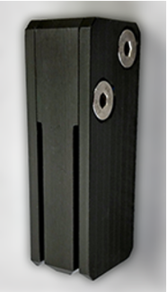
Time Required
- 30 Minutes for IQ Input queue—Module used to load MTUs onto the Panther instrument.
Installation qualification—Set of procedures to verify the proper installation of a Panther system. Teach Tool procedure
- 20 Minutes for Sys OQ x2
- Total: 50 Minutes
Procedure
Part A: Prepare the System
- Power on the Panther System and PC.
- Initialize the Distributor.
- Initialize the Input Queue.
- Remove the Luminometer Injector.
- Open the Service Drawer.
- From the Distributor tab, click on the Move tab and select Unlock Drawer.
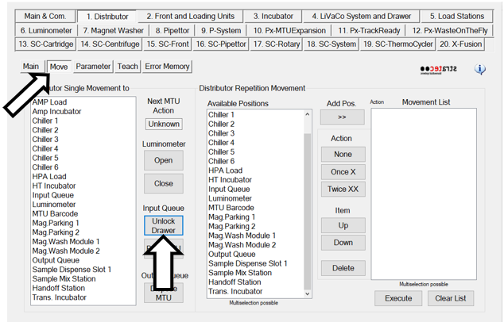
- Pull open the Input Queue and remove all MTU Multi-tube unit—Container used to process tests in the instrument. An MTU contains five separate reaction tubes. The MTU is moved through the instrument by the linear distributor and includes five tiplets for pipettiing to be used in the mag wash station.'s from the rails and the MTU in the hand-off channel. DO NOT discard the MTUs - these will be used when running the OQ.
- Close the Input Queue.
Part B: Perform LD Theta Position Teaching
When completing the Distributor Alignment and Teaching Procedure:
- ALWAYS Calculate and set other Positions in the Theta Position Teaching. This ensures the theta offset is applied to all modules.

Note—The Calculate and Set other positions button has been removed in Service SW v4.0.7.0. The Overwrite NVM now also serves as the "calculate and set other positions". - To calculate and set Theta positions, follow the instructions below:
- Initialize the Linear Distributor.
- On the Distributor tab, select Parameter. Set the Authorization Code to 1.
- On the Distributor tab, select Teach.
- Select Input Queue from the Select Position list.
- Move the Linear Distributor to the Input Queue location by selecting the Move Theta & Z & X to selected Position (!! Fast move !!) option.
- Click Execute.
- Ensure the Distributor Head is parallel to the Luminometer. Refer to Theta Position Teaching for Service SW v4.0.7.0 and above.
- Select Theta under Select Drive.
- Then click Get All under Save Current Axis Position/Get Current Pos.
- Then click Save All.
- When complete, select Overwrite NVM and then Execute.
Part C: Placing the IQ Teach Tool and Verification of MTU Path Clearance
- From the Distributor tab, click on the Move tab and select Unlock Drawer.
- From the Distributor Single Movement to list, select Chiller 1.
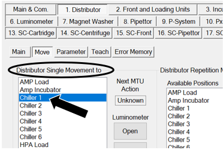
- Slide the IQ Teach Tool [TLS-06359] into the Input Queue hand-off channel until it stops.
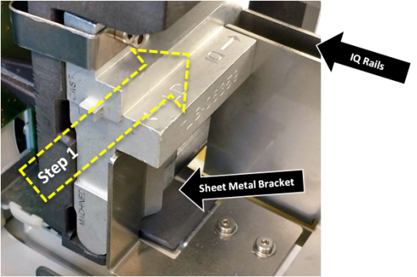
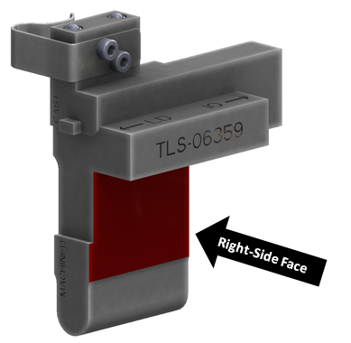
- Verify that both rails touch the surface of the IQ Teach Tool. The images below show the surfaces on the Teach Tool that are used to verify rail placement.
- Surface 1 should be in flush contact with the innermost IQ Rail.
- Both IQ Rails should be touching Surface 2.
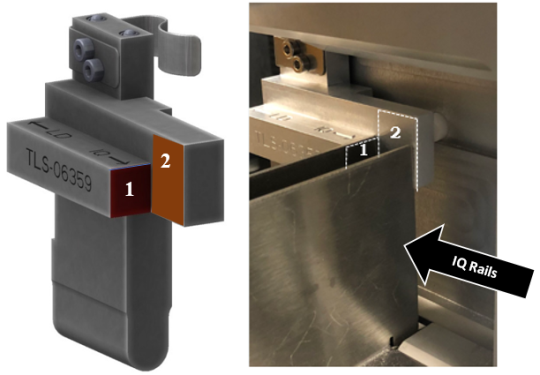
- The image below shows the IQ Teach Tool touching both IQ Rails.
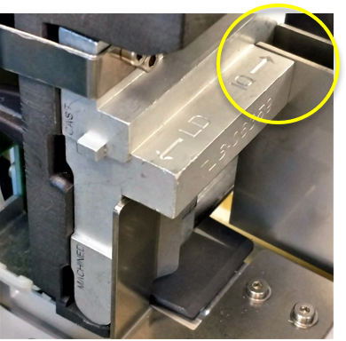
- If the front face of the IQ Teach Tool is:
- NOT flush or within the acceptable range of ±0.5 mm of the Input Queue head face.
AND/OR
- The back edge of the rails do not contact the surfaces of the Input Queue Teach Tool (Surface 2):
- Adjust the rail closest to the Linear Distributor so that the front face of the tool is flush with the appropriate Input Queue head surface.
- Adjust the other rail using the Input Queue Rail Alignment Tool [903868]. If needed refer to Input Queue MTU Rail Alignment Procedure.
- Adjust both rails so that the edge of each rail touches the IQ Teach Tool Surface 2 as shown in the pictures above.
- NOT flush or within the acceptable range of ±0.5 mm of the Input Queue head face.
- If the Input Queue's sheet metal bracket is too close to the back of the Input Queue and does not allow the Teach Tool to be inserted, or if a gap is seen between the bracket and the right-side of the tool follow the instructions below.
- Loosen the two screws securing the bracket.
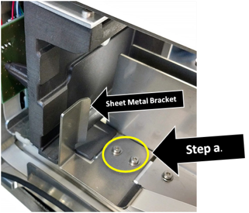
- Adjust the bracket so that it is pressed against the side of the tool and tighten the two screws that secure the bracket in place.
Note—Some brackets may need to be manually bent to achieve a 90° bend.
- Verify that the appropriate face of the IQ Teach Tool is within 0.5mm of the front face of the Input Queue head. The location used on the tool to verify this alignment depends on which of the two versions of the Input Queue (machined or cast) is installed in the instrument.
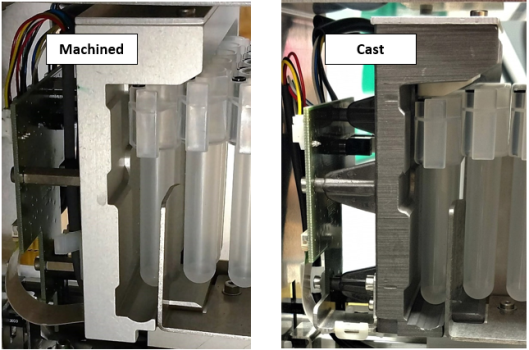
Note—Notice that the machined head is lighter in color and has a smoother appearance than the cast head. Also, the back side of the machined Input Queue head has 2 screws. - For the MACHINED Input Queue
- The bottom face of the tool (marked "MACHINED") should be flush (within ± 0.5mm) across the front with the Input Queue head.
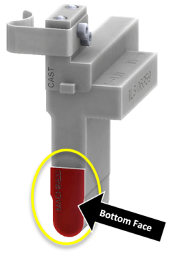
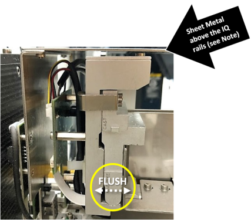
- The Machined Input Queue head may not be parallel to the sheet metal above the IQ rails. IF it is parallel, the Input Queue Teach Tool may not slide into the MTU hand-off position. This can be corrected by completing the Input Queue Screw Fastening and Inspection Procedure
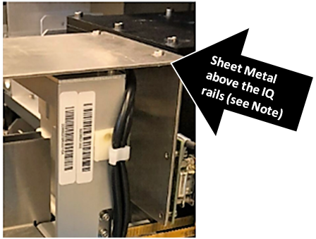
OR
- For the MACHINED Input Queue
Part D: Input Queue Alignment to the Linear Distributor
- From the Distributor tab, click the Teach tab.
- In the Select Drive section, select Sledge.
- In the Select Position section, select Input Queue from the menu.
- In the Options for selected Device and Drive section, select Move Theta & Z & X to selected Position (!! Fast Move !!).
- Click Execute. This will move the Linear Distributor head to the Input Queue.
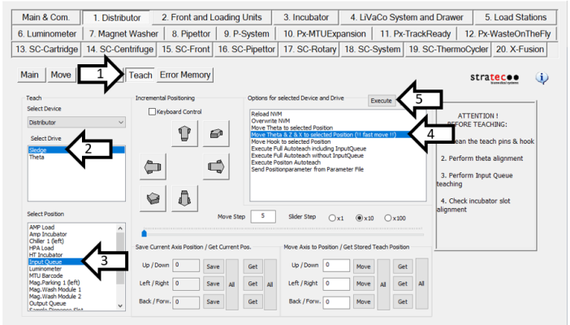
- In the Move Axis to Position / Get Stored Teach Position section, enter 1130 in the Back / Forw. field.
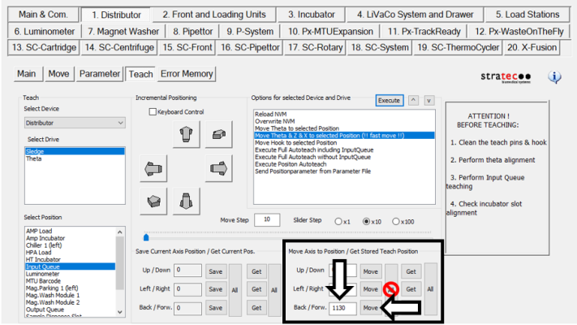
- Once the position values have been entered, click the Move button next to the position entered.
Note—DO NOT click the "All" button. Use the individual Move button. - The Linear Distributor hook will extend to the Input Queue Teach Tool tab.
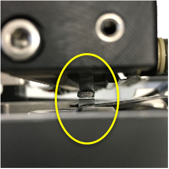
- In the Incremental Positioning section, set the Move Step value to 5.
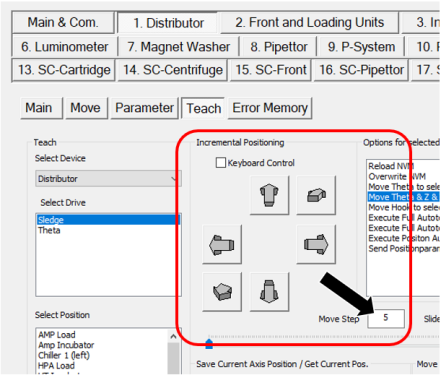
- In the Incremental Positioning section, click the arrow in the top-right corner (pointing diagonally up and to the right) to move the hook towards the tool tab.
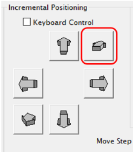
- Change the movement increment (Move Step) from 5 to 1 as the hook approaches the tab.
- Continue to click the arrow until the hook is 1mm from the tool face.
Note—DO NOT SAVE settings at this step.
- These values DO NOT get saved.
- This is ONLY used to help with the alignment of the Linear Distributor to the Input Queue Head MTU handoff position in the Y-axis.
- Check the alignment of the hook to the teach tab on the Teach Tool.
- If the hook is centered over the teach tab skip to Step 17.
- If the hook is NOT centered over the teach tab, continue to Step 14.
- Using the M4 hex tool, loosen the two visible mounting screws that secure the Input Queue to the Service Drawer in the front and back of the Input Queue.
- Pull open the Input Queue drawer until the third mounting screw is exposed, loosen the third mounting screw, and close the Input Queue.
- Viewing the Input Queue from the top of the module, align the Input Queue Teach Tool tab such that the width is aligned with the width of the Linear Distributor hook (this is achieved by shifting the Input Queue towards the front or back of the service drawer).
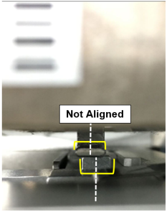
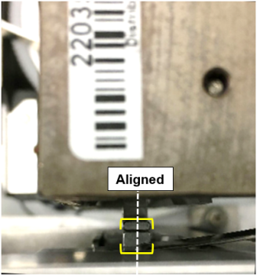
- Once the tab and hook are aligned, tighten down the Input Queue mounting screws to secure the Input Queue in its aligned position (tighten the front and back mounting screws first, then pull open the Input Queue drawer to expose and tighten the last mounting screw).
Part E: IQ Position Autoteach
- From the Distributor tab, click the Parameter tab.
- Change the Authorization Code to "1" and click Set.
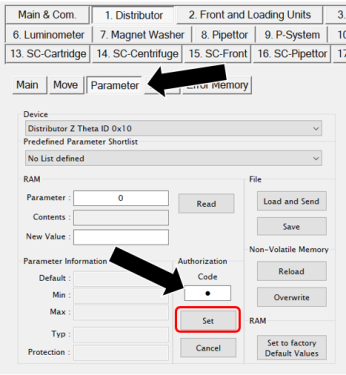
- Click on the Teach tab.
- Select the Input Queue in the Select Position section.
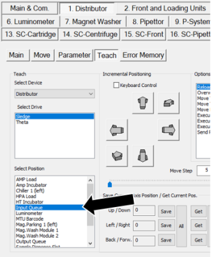
- In the Options for selected Device and Drive section, select Execute Position Autoteach and click Execute.
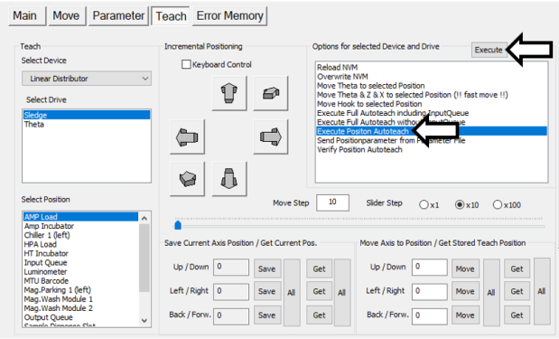
- Follow and respond to the on-screen prompts as directed.
- A Service Software dialog box will appear, "Input Queue Autoteach has been successful, please remove Teach Tool". Click OK.
Note—DO NOT remove the Input Queue Autoteach Tool.
- When the Execute Position Autoteach sequence completes, a "Write all Parameters to NVM?" dialog box will appear. Click Yes.
- After moving the Distributor, remove the Input Queue Teach Tool.
Part F: Autoteach Including Input Queue
|
|
Note—
|
- Ensure that the IQ Teach Tool has been accurately placed in the handoff position, per Section D.
- Close and latch the service drawer.
- Place the injector back into the Luminometer.
- In the Options for selected Device and Drive section, select Execute Full Autoteach including Input Queue and click Execute.
- Follow and respond to the on-screen prompts as directed.
- Remove the injector from the Luminometer.
- Unlock and Open the service drawer.
- From the Distributor tab, click on the Move tab.
- In the Distributor Single Movement to section, select Chiller 1. The Linear Distributor should move to the Chiller 1 position.
- Remove the Input Queue Teach Tool from the Input Queue hand-off position.
Verification
Perform a System OQ:
- Close the service drawer and latch it into place.
- Place the Luminometer Injector back into the Luminometer.
- Click on P-System tab > Main 1 tab. This tab should be selected by Default.
- Check the checkboxes for Report, Initialize, Clear MTU’s, Vacuum P., All Modules.
- In the Cycles section, enter 2.
- Click System OQ Test.
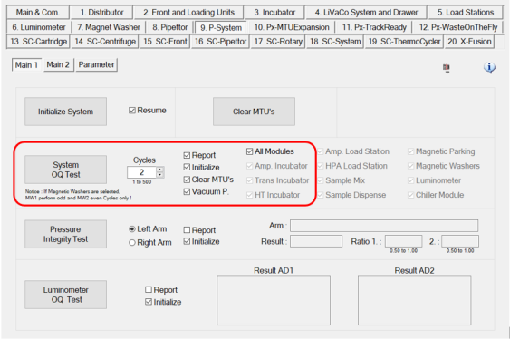
- A dialog box will appear for “Report Setup”. Fill in the appropriate information and click OK.
- A Service Software dialog box will appear, “Initialize and activate Vacuum Pump?”. Click Yes.
- After Clear MTU's process is complete a Service Software dialog box will appear, “Please load MTU’s.” Open the Input Queue drawer and load a minimum of 2 MTUs on the rails. Click OK.
Note—This will take several minutes, do NOT walk away form the system. - A window appears with a pass or fail result. Click OK.
- The report is generated and appears in a window. Save the report.
 button at the top of the page to send feedback, comments, or change requests.
button at the top of the page to send feedback, comments, or change requests.{kind=link}